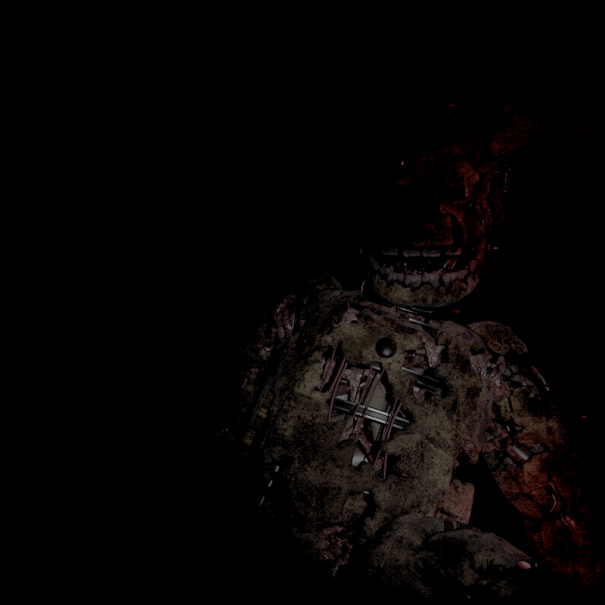
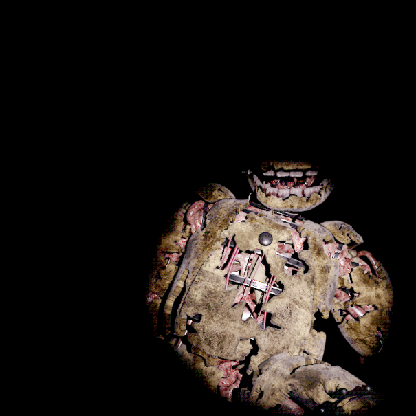
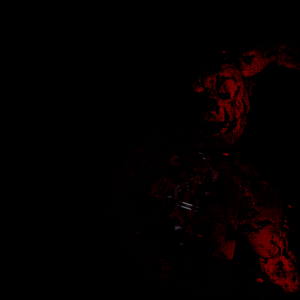

FNAF AS es un proyecto narrativo y visual que reimagina los eventos de Five Nights at Freddy's desde historias alternativas. La web complementa el universo con lore, renders 3D y una atmósfera tipo menú de juego sin texto, con glitch y estática de fondo.
Ir al foroFive Nights at Freddy's Alternative Stories es un concepto de fanfic y universo alternativo donde los eventos clásicos de FNAF se cruzan con nuevas tramas, personajes y finales alternativos.
La idea es explorar versiones alternativas del terror animatrónico, con cambios drásticos en el lore: animatrónicos que actúan como guardianes o rebeldes, archivos secretos, carreras contrarreloj dentro de una pizzería corrupta, y finales donde la realidad se distorsiona.
En FNAF AS, el protagonista accede a un archivador olvidado que contiene rutas alternativas del programa Freddy Fazbear. Cada noche desbloquea un capítulo diferente, y las decisiones influyen en cómo se revela el pasado de los animatrónicos.
El tono visual busca un menú de juego corrupto: glitch, estática y fondos con renders 3D de animatrónicos. La navegación debe sentirse como entrar en una versión pirateada del universo original.



Login con GitHub. Los comentarios se guardan en los Discussions del repo.